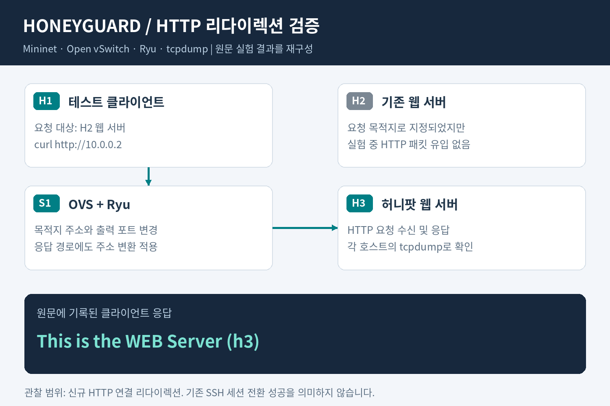
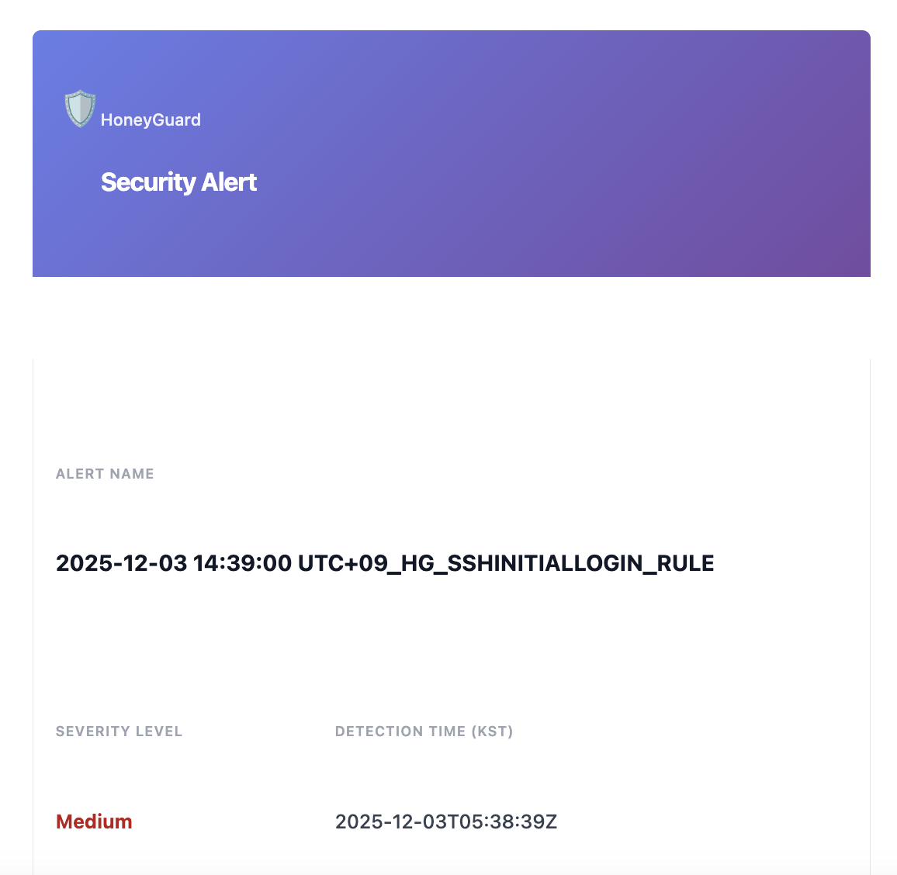

HoneyGuard — 허니팟·허니토큰 기반 위협 탐지와 SecOps 연계
허니팟과 허니토큰에서 발생한 접근을 탐지하고 보안 운영자에게 알리는 HoneyGuard 프로젝트에 참여했습니다. 트래픽을 허니팟으로 전환하는 방법과 Falco의 행위 탐지 규칙을 테스트하고, 탐지 이벤트를 Google SecOps의 플레이북과 이메일 알림으로 연결했습니다. 실험에서 확인한 동작과 제약을 정리해 제품에 적용할 수 있는 범위를 검토했습니다.
기술 검증 과정과 탐지·알림 결과
시작한 이유와 맡은 일
정상 계정이나 자격증명을 사용한 접근은 로그인 성공 여부만으로 의도를 판단하기 어렵습니다. 실제 업무에서는 접근할 이유가 적은 허니팟과 허니토큰을 두고, 여기에 발생한 행위를 조사할 단서로 활용하고자 했습니다.
허니팟 기술 조사와 네트워크 PoC, Falco 규칙 테스트, Google SecOps 연계를 맡았습니다. 도구가 실행되는지만 확인하기보다 실제 요청 경로와 탐지 결과를 대조하고, 실패한 조건도 실험 기록에 남겼습니다.

검증하고 연결한 내용
- HTTP 요청 경로와 기존 TCP 세션 전환
- Mininet에 클라이언트 H1, 기존 서버 H2, 허니팟 H3를 구성했습니다. Open vSwitch와 Ryu로 요청 경로를 바꾼 뒤, H2 주소로 보낸 요청에 H3가 응답하는 것을 확인했습니다. 각 호스트의 tcpdump 기록과 OVS 흐름 규칙을 함께 확인했습니다. 이미 연결된 TCP 세션은 주소 변환과 상태 기반 세션 스플라이싱을 나누어 테스트했습니다.
- Falco 커스텀 탐지 규칙
- 허니파일 접근, curl 업로드 시도, 네트워크 연결, curl·wget 실행을 탐지하는 규칙을 작성하고 테스트했습니다. 개별 행위를 이벤트로 표현하는 방법을 확인했으며, 파일 조회와 curl을 묶은 연계 동작 테스트는 실패 항목으로 기록했습니다.
- Google SecOps 탐지·알림 연계
- Falco·collector 로그를 webhook 또는 S3 경로로 수집하는 구조를 정리하고, 이벤트 필드와 파서, 탐지 규칙, 플레이북을 연결했습니다. 이메일 템플릿에는 탐지명, 심각도, 발생 시각과 조사에 필요한 정보를 담았습니다.
실험에서 확인한 차이
- 신규 연결과 기존 연결. 신규 HTTP 요청은 허니팟으로 전환됐지만, 기존 TCP 세션에 단순 주소 변환을 적용했을 때는 RST가 발생해 연결이 종료됐습니다.
- 평문 세션과 암호화 세션. 상태 기반 스플라이싱은 Netcat·Telnet 실험에서 통신이 유지됐습니다. 같은 접근을 기존 SSH 세션에 적용했을 때는
Connection corrupted로 종료돼, 암호화 세션에는 그대로 적용하기 어렵다는 점을 확인했습니다. - 개별 탐지와 연계 탐지. 파일 접근이나 프로세스 실행을 각각 탐지하는 것과 여러 행위를 하나의 시나리오로 묶는 것을 구분했습니다. 실패한 연계 테스트는 후속 검증 과제로 남겼습니다.
제품 기획에 반영한 방향
팀 MVP에서는 기존 EC2의 스냅샷으로 환경을 모사하는 허니팟과, 사용자가 스크립트로 설치하는 허니토큰을 주요 기능으로 제안했습니다. 보호 대상 선정 → 배포 → 행위 수집 → SecOps 탐지 → 운영자 알림으로 이어지는 흐름을 정리했습니다.
스냅샷 기반 자동 배포는 MVP 설계 범위입니다. 이 프로젝트에서는 네트워크·탐지 PoC와 SecOps 연계를 수행했습니다.
결과
허니팟으로 트래픽을 전환할 수 있는 조건과 기존 세션을 다룰 때의 제약을 비교한 PoC 기록을 남겼습니다. 탐지 이벤트를 운영자가 확인할 수 있도록 Google SecOps의 파서·탐지 규칙·플레이북을 구성하고, HoneyGuard 알림 화면까지 확인했습니다.

사용 기술
Mininet · Open vSwitch · Ryu · OpenFlow · Python · tcpdump · Wireshark · Falco · Docker · Google SecOps